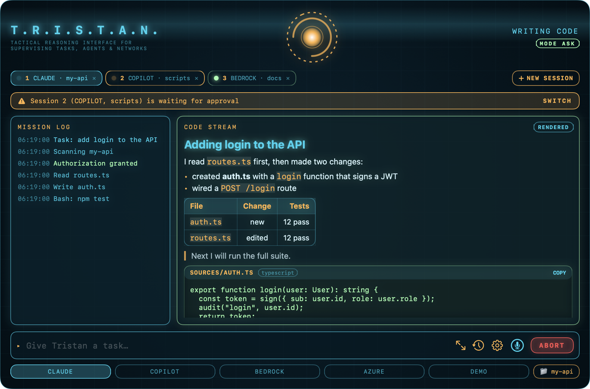
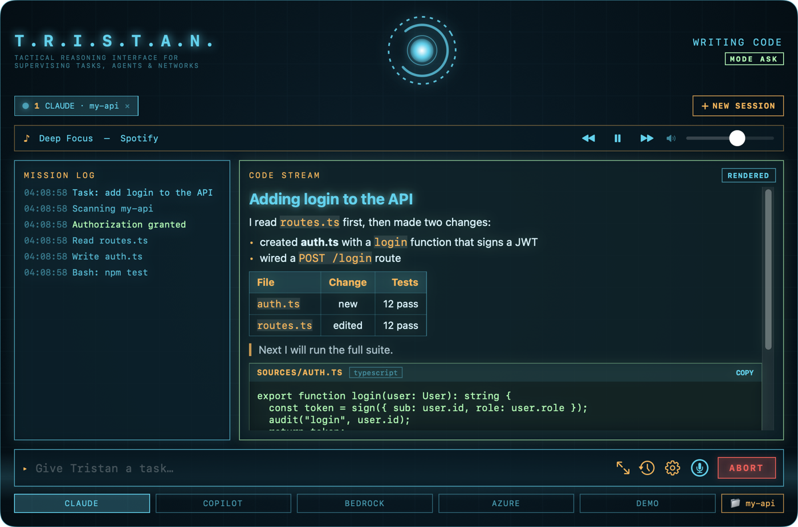
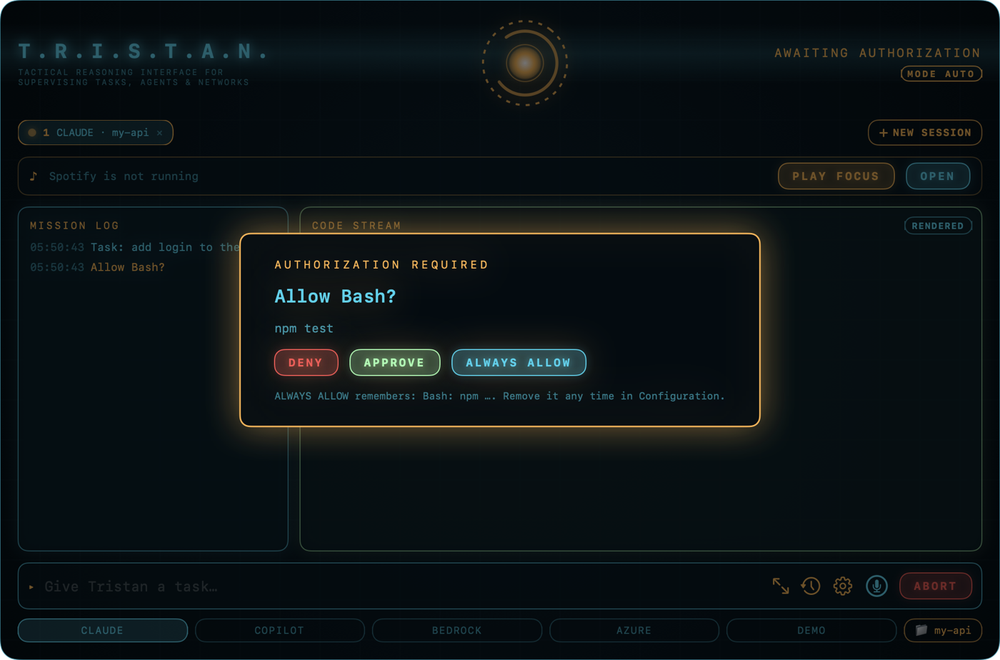
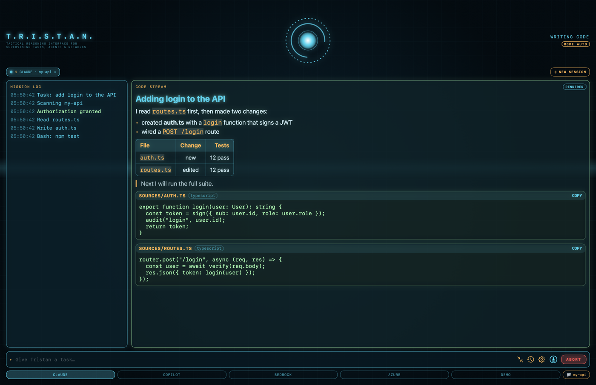
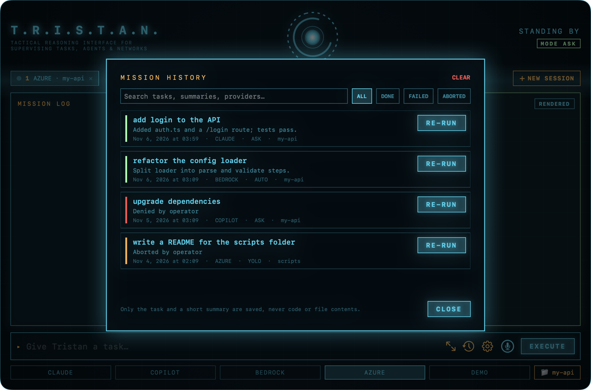
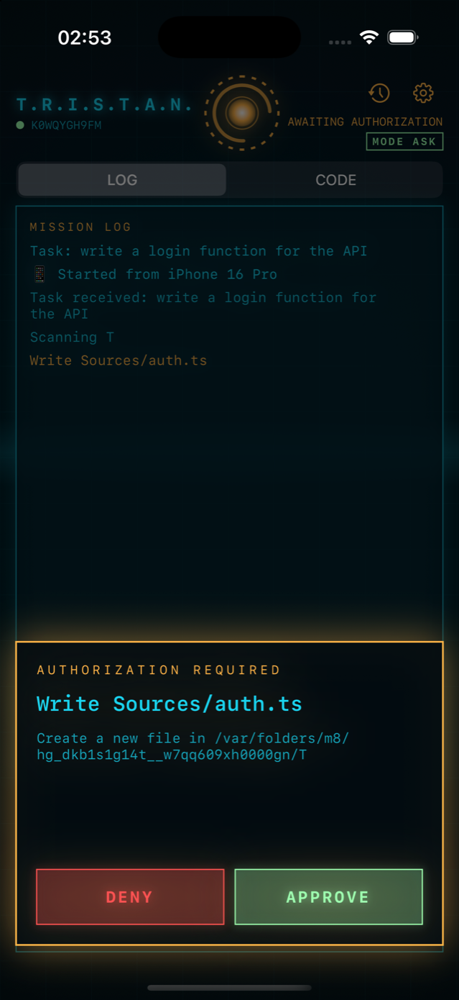
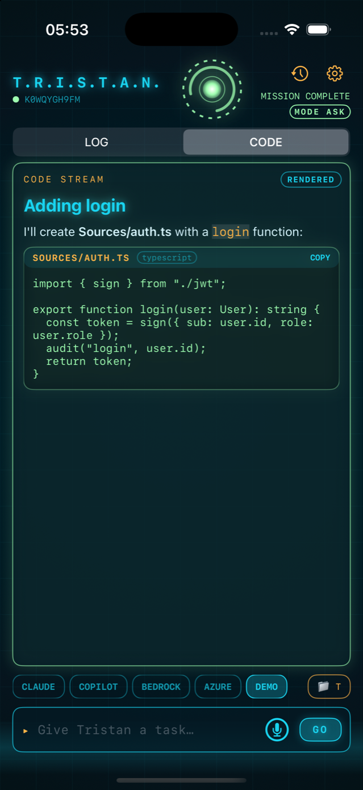
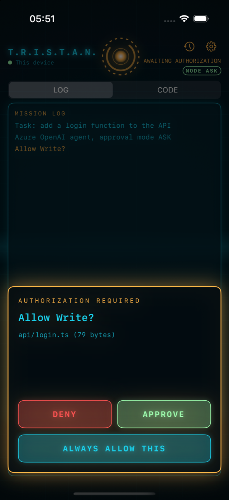
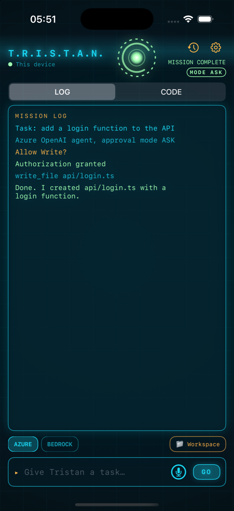
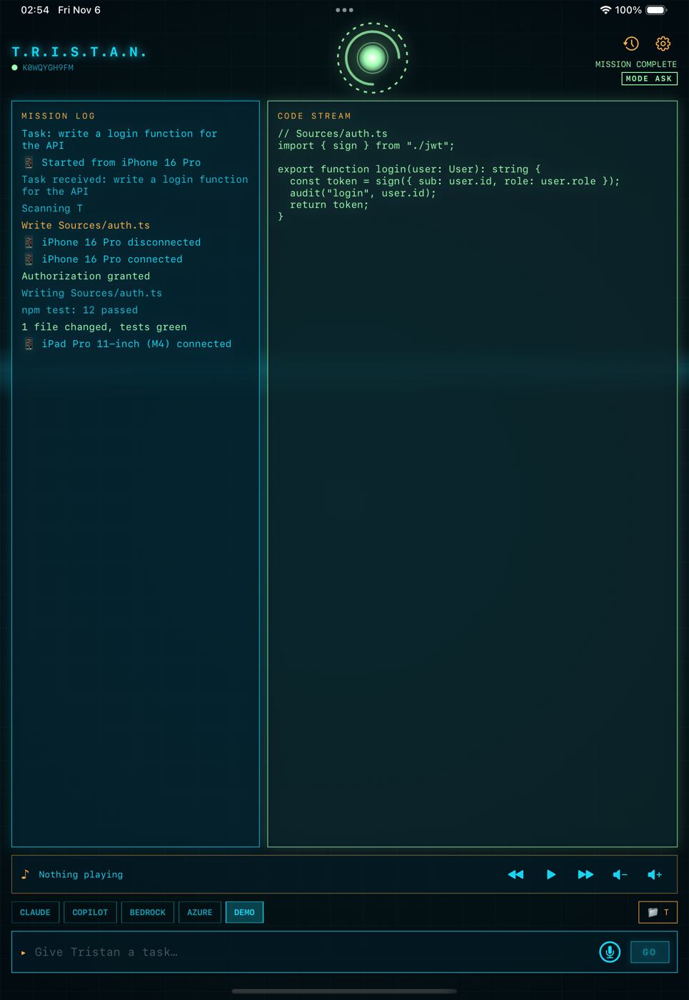

You stay in charge
Every action that needs permission shows up as an approve or deny card, on your Mac or your phone. Choose how much to trust: ask every time, let routine work through, or turn the checks off.
Tristan runs Claude Code, Copilot, Amazon Bedrock and Azure OpenAI side by side. You see what each one is doing, and by default it asks before it acts. Take it with you on your iPhone or iPad.

Coding agents are quick, and sometimes too quick. Tristan gives you a calm place to watch them, steer them and say yes or no.
Every action that needs permission shows up as an approve or deny card, on your Mac or your phone. Choose how much to trust: ask every time, let routine work through, or turn the checks off.
Run a Claude session and a Copilot session side by side, each in its own folder. A banner tells you the moment one needs you. In our checks, two sessions together took about as long as one.
A finished mission stays in the session. Say “now add tests for that” and Tristan knows what “that” is. Want a clean slate? Open a new session, or forget with one click. Memory stays with the folder you worked in.
Output appears the way it would read on a page: headings, lists, tables, and code cards with a copy button. Go full screen when you want to focus, and pick a theme (30 to choose from, light and dark, some borrowed from movies and comics) if cyan is not your color.
Pair an iPhone or iPad with a QR code. Start a mission, watch it run and approve from the couch. Or leave the Mac behind and run missions on the phone itself.
Hold a key and talk. Turn on the wake word and say “Hey Tristan.” Hear sound and voice cues, and play Spotify while you work—the music dips when Tristan speaks.
The code is open under the MIT license, and 173 automated tests guard it. This page is honest about what has and hasn’t run for real—see what’s tested.
A dark, calm window with one glowing reactor that tells you at a glance whether anything needs you.









On iPad the log and the code stream sit side by side. The iPhone and iPad app has run in the simulator so far—see what’s tested.
Three modes, one switch. The default is the careful one.
You get a card before each action that needs permission. Nothing changes until you say yes.
Everyday, low-risk actions go ahead. Risky ones are blocked or still ask.
Only for folders you can afford to lose. It needs a clear confirmation, and your phone can’t switch it on.
rm and git push.You need a Mac with Apple Silicon and macOS 14 or later. No accounts are needed to try it: pick DEMO in the window and type any task.
Tristan-0.3.0.dmg from the latest release.# 1. Optional: check the download cd ~/Downloads && shasum -a 256 -c Tristan-0.3.0.dmg.sha256 # 2. Install hdiutil attach Tristan-0.3.0.dmg cp -R "/Volumes/Tristan 0.3.0/Tristan.app" /Applications/ # 3. Remove the quarantine flag xattr -dr com.apple.quarantine /Applications/Tristan.app # 4. Open it open /Applications/Tristan.app
Rather build it yourself? You need Xcode.
git clone https://github.com/mariotristan/jarvis-tristan.git cd jarvis-tristan scripts/install.sh
The full guide, including the iPhone and iPad app, is in the README.
Tristan is an early release. Everything below has automated tests. This table shows which parts have also run against the real thing.
| Part | Status | Notes |
|---|---|---|
| Claude Code | Tested for real | Approvals on every action, and two sessions running at once. |
| Copilot, two sessions in Auto mode | Tested for real | Each session wrote its own file in its own folder, at the same time. |
| Copilot in Ask mode | Stand-in only | It needs blanket permission, so we haven’t run it live. Issue 5 |
| Amazon Bedrock | Stand-in only | Request signing matches Amazon’s published examples. Issue 1 |
| Azure OpenAI on the Mac | Tested for real | Streaming and tool calls worked against a real deployment, signed in with an API key. |
| Azure OpenAI with Azure CLI sign-in, and on iPhone | Stand-in only | Entra ID sign-in and the phone’s standalone mode are not yet tried live. Issue 2 |
| Session memory | Stand-in only | Tested with scripted models; not yet tried live across several real missions. |
| iPhone and iPad app | Simulator only | The secure link is tested end to end on one machine. Not yet on a real phone. Issue 3 |
| Voice, wake word, notifications, Spotify | Stand-in only | The logic is tested; nobody has used them end to end yet. Issue 4 |
A few limits to know about: the download is for Apple Silicon Macs only, it isn’t notarized yet, and iPhone approvals only arrive while the app is open in front.
Every item is a GitHub issue with a short brief, so anyone can pick one up. The first two are the easiest places to start.